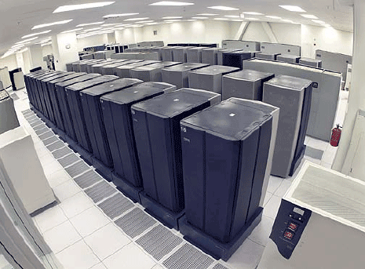

A Short History of the Data Centre
A Guide for Non-Technologists
Data Centres are currently receiving a lot of negative press. They are viewed as outdated and unnecessary by many companies who are now embracing the cloud as the answer to their technology infrastructure requirements. At 17 Ways we believe that Data Centres provide an essential role for all corporates and will continue to do so for many years to come. To understand why we take this view, we would like to take you on a quick history tour of the data centre and to look at its role within the corporate world.
In part 2 we will look at cloud computing and compare this to the traditional Data Centre world.
What Does a Data Centre Do?
Computers don’t like coffee. They also don’t like power outages, extreme temperatures or cables being dislodged. For that reason computers have been kept in specialised rooms called Data Centres since they were first invented.
Personal computers have never had that kind of treatment and have to cope in the real world and we will talk more about them in a while, but server technology traditionally lives in a Data Centre. When we say server technology we are referring to the computers that run the backend processing for applications. When you run an application on your PC at your desk, typically it will connect to a number of servers in a data centre. These servers are running things like databases, -which keep all of the critical data, processing - that updates that data and produces reports, and security services - to control who can access what data.
The Data Centre is the Fort Knox of the technology department. It is where all of the critical computers and networking equipment are kept.17Ways
The 90's Data Centre
By the 90’s the Data Centre was a large room with a diverse range of equipment from different vendors. Data Centres were (and still are) expensive to run. They need a constant temperature, backup power supplies and secured access. Systems from different vendors didn’t generally interoperate, leading to duplication and “islands of technology”. Within a data centre the different computers lived in specialised racks with whole rows of racks being dedicated to different vendor’s technologies. There was little standardisation and vendors typically built most of their hardware themselves rather than using other people’s parts. While this led to healthy competition, most of the hardware arms race was only delivering small, incremental change.
The real revolutionary change was happening outside the data centre.
X86 and Open Source
The brain of a computer is the Central Processing Unit (CPU). During the 90’s hardware vendors such as Sun, IBM and HP were building there own CPUs while PC manufacturers were using the Intel x86 chips (or clones from companies such as AMD). It is a lot cheaper to buy a CPU than to build one and the volume of PC sales drove down the production costs. This meant that PCs became very much cheaper alternatives to traditional data centre hardware, and throughout the 90’s another island of technology was growing inside the data centre as more serious systems were being developed for PCs. The PC Server became a reality, despite being an oxymoron.
At the same time a movement called Open Source was gaining momentum. Each different type of CPU required different software to be developed to run on it. However with the increase in the use of x86 processors there were suddenly a lot of different computers that could run the same software.
If you spent a lot of time developing software then you typically wanted to keep that private to protect your IP, however a lot of people were realising that there was more P than I in the software that they were developing to do non-core activities. For example, if you are an insurance company then you care a lot about your claims handling systems but you don’t really care about the software that you use to book meeting rooms. Rather than build this stuff from scratch within each organisation or buy that software from a vendor, the alternative was for everyone to share it. The technology industry which underpins banks and multi-nationals might seem like a strange place for socialism to start but that is exactly what happened. Starting with low-level things like operating systems it spread quickly with people seeing a huge benefit in using Open Source software that anyone can use and update, but nobody owns.
Storage Networks
Put all of your eggs in a bombproof basket and guard it with your life
Meanwhile back in the data centre of the 90’s and early noughties the number of servers continued to grow. These systems were not Open Source and most of them were running their own CPUs. About the only thing that the manufactures of these computers agreed on was disk technology. This is the medium that they use to store information, exactly like the storage in a laptop or iPhone. Because this stuff was low level and not a big differentiator, the hardware vendors were more influenced by standards and Open Source, which meant that this stuff could actually be shared. And if it can be shared then it doesn’t even need to be inside the same box. This led to the emergence of companies selling data centre storage systems. The hard drives effectively disappeared from the servers and became shared, with the data physically living on a new box in the corner of the data centre. Not only did this reduce cost by pooling all of the space requirements but it helped with disaster recovery as now only one system in the data centre needed to worry about copying data somewhere else instead of every system doing its own thing.
Let’s Take A Break
This is a good point to stop and have a look at what is in a typical data centre a few years ago.
You enter a data centre through a security check. Nobody gets in without a valid reason and appropriate approvals. Once inside you will find it incredibly noisy. Most of this is due to fans inside the computers and air conditioning. At one end of the large room there will be some big white boxes. These are the air conditioners and power management systems. They make sure that the humidity, temperature and power remain constant. In every organisation these are looked after by a guy who looks like Scotty from Star Trek and tells anyone who will listen that we desperately need more dilithium crystals. Nobody ever seems to believe him.
The floor you stand on is raised. Underneath you are enough cables to get to the sun and back and nobody is brave enough to unplug any of them. Probably in the middle of the room are a number of huge metal boxes. These are the storage systems. The rest of the room is full of computer racks, mostly identical. Down one side of the room a series of racks labeled Networks and the rest of the room the racks contain computers with the name of the technology/team that looks after them.
Meanwhile in Cyberspace…
The description above applies to typical corporate IT. The technology underpins the business. Reliability, security and certainty are the paramount concerns. However during this time another breed of company was emerging where the whole business was technology. Not concerned to the same extent with backward compatibility and data integrity issues, companies like Amazon and Google were able to approach things complete differently. They rejected the data centre model described above and instead turned to our old friend the PC. Instead of trying to get reliability by using hardware the hardly ever breaks, they build their applications to cope with the hardware breaking and then used the cheapest hardware they could, and lots of it. Eventually they realised that the technology they were using internally could be sold, or rather rented, to others. This is often referred to as Infrastructure-as-a-Service (IaaS) or the Cloud. However the Cloud is a very general term that we will talk about in more detail below.
Standardisation
Returning to our data centre we notice something strange happening throughout the start of the 21st century. More and more hardware vendors are adopting x86 CPUs and standardising on Microsoft’s Windows operating system or the Open Source Linux operating system. Even Apple discards their own chips to use Intel’s x86 and an Open Source operating system very similar to Linux. Now the racks in the data centres are still full of different vendors hardware but under the covers these computers are very similar. The battle between the hardware vendors has moved away from the hardware itself and into how easy they can make it for you to run that hardware.
Virtualisation
When we talked up to know about the computers using a single CPU, actually that wasn’t true. While all the rest of the change was going on computers were evolving to be able to use more than one CPU allowing them to do multiple things at the same time. The CPU manufacturers were also building more into their chips so that a single CPU could effectively have a number of CPUs or cores, on the same chip. This means that computers now are not the simple PC that you have on your desk, they are many times more powerful. With all that power available in a single machine and data centre space being expensive it was only a matter of time before virtualisation became possible. Ignoring the noise from mainframe people shouting “We did that 50 years ago!” the PC Server software vendors re-invented the ability to run a number of “virtual” machines” on a single physical machine. Instead of having several racks full of computers you could now have one computer that to everyone outside the data centre, looked like it was lots of computers. If you find that hard to understand, think about it this way: you park your car outside your house. You use it whenever you like and you think you own a physical car. In fact everyone in your street actually uses the same car but at different times. One physical server, lots of virtual servers.
Converged Infrastructure
Way back when we started this, our data centre consisted of lots of completely different things from different vendors. Then we separated out the storage part and now those vendors have moved towards using the same x86 CPUs so now a lot of our servers are very similar to each other. We also have virtualisation so we have less servers. The data now sits on one box and the (virtual) server runs on another box. They are both connected over a network (all those cables under the floor and some clever network devices). What would your mum say if she saw this? “Why not put them all in one box?”. That is exactly what converged infrastructure is all about.
The next generation of data centre infrastructure, called Converged Infrastructure, takes the compute power of the x86 servers, the network technology from those clever boxes and the storage and it puts them altogether along with the virtualisation technology and some software to manage it all. The mainframe guys think it is the 1960’s again but to everyone else it is new and it represents a massive step forward.
Again, if you are outside the data centre you can’t really tell the difference, except adding new servers or disk space is now incredibly fast and your costs for running the data centre are less.